Who are we?
We are postgraduate students and early career researchers who are passionate about making our field a more inclusive and accessible. We want to enable all students to have the same opportunity to pursue an impactful, rewarding, and meaningful career in evolutionary biology. We can not wait to see you in our course and other events!
Project Coordinator
Sergio González-Mollinedo
 Sergio is a 3rd year PhD student working on genome evolvability and the role of transposable elements in small population dynamics and other genomic conflict contexts such as hybridisation. He is currently based at Macquarie University, Sydney.
Sergio is a 3rd year PhD student working on genome evolvability and the role of transposable elements in small population dynamics and other genomic conflict contexts such as hybridisation. He is currently based at Macquarie University, Sydney.
Administration
Arve Lee Willingham Grijalba
 Arve is a PhD student at Pasteur Institute investigating the codiversification of the oral microbiota with ancient humans in the Southern Cone. He is interested in a variety of topics from ancient parasitology to domestication.
Arve is a PhD student at Pasteur Institute investigating the codiversification of the oral microbiota with ancient humans in the Southern Cone. He is interested in a variety of topics from ancient parasitology to domestication.
Brandon Samuel
Whitley
 Brandon is a PhD Fellow in Arctic Plant Diversity and Pollination Networks at the Natural History Museum of Denmark, University of Copenhagen. He is studying plant-pollinator interactions in Greenland, working with pollen DNA metabarcoding and genome skimming techniques.
Brandon is a PhD Fellow in Arctic Plant Diversity and Pollination Networks at the Natural History Museum of Denmark, University of Copenhagen. He is studying plant-pollinator interactions in Greenland, working with pollen DNA metabarcoding and genome skimming techniques.
Elpida Skarlou
 Elpida is a 1st year PhD student at the University of Edinburgh in the Ross Lab, exploring the evolution of reproductive systems in the Iceryini tribe (scale insects).
Elpida is a 1st year PhD student at the University of Edinburgh in the Ross Lab, exploring the evolution of reproductive systems in the Iceryini tribe (scale insects).
Juan José Lagos-Oviedo
 Juan José combines theoretical modeling, behavioral experiments, and comparative analyses to understand the evolution of social insects. He is doing his PhD at Würzburg University in Germany, studying the evolution of rescue behavior in ants.
Juan José combines theoretical modeling, behavioral experiments, and comparative analyses to understand the evolution of social insects. He is doing his PhD at Würzburg University in Germany, studying the evolution of rescue behavior in ants.
Juliana Rodríguez Fuentes
 Juliana is a PhD student in the University of Bern. She studies the phenotypic effects of chromosomal inversions in Threespine Sticklebacks. More broadly, she is interested in the mechanisms driving phenotypic diversification and speciation.
Juliana is a PhD student in the University of Bern. She studies the phenotypic effects of chromosomal inversions in Threespine Sticklebacks. More broadly, she is interested in the mechanisms driving phenotypic diversification and speciation.
Course Design
Anshuman Swain
 Anshuman is a postdoctoral researcher at Harvard. He studies neo-ecological and paleo-ecological networks using a combination of theoretical, field-based, and museum-based research.
Anshuman is a postdoctoral researcher at Harvard. He studies neo-ecological and paleo-ecological networks using a combination of theoretical, field-based, and museum-based research.
Daniel L. Jeffries
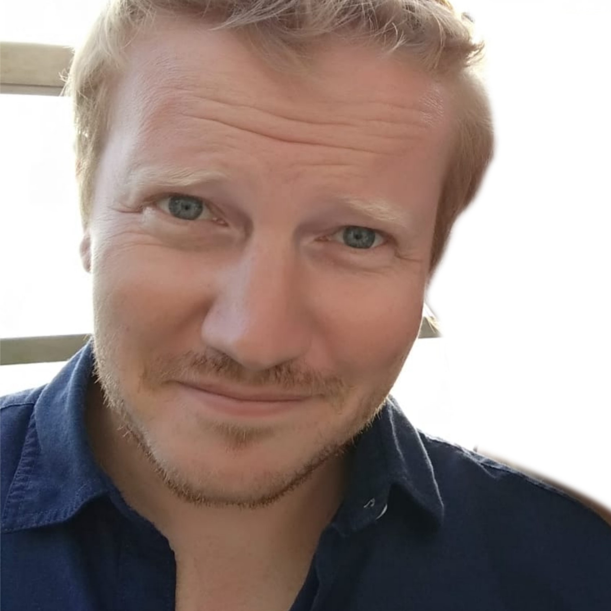 Daniel is a computational biologist at the University of Bern. His main interests are the evolution of sex chromosomes and sex determination systems, which he has studied in organisms ranging from amphibians to plants.
Ella Rees-Baylis
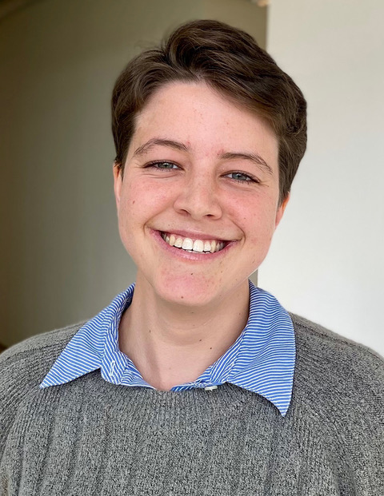 Ella is a PhD student at the University of Bern, Switzerland, broadly interested in the evolution of sex-specific life-histories and senescence. She uses theoretical models to investigate how life-history trade-offs and mating dynamics can shape sex differences in mortality and longevity.
Henry North
 Henry is a PhD candidate at the University of Cambridge. He uses a population genomics approach to study rapid adaptation, hybridization and the evolution of reproductive isolation (i.e. speciation), especially among invasive species.
Henry is a PhD candidate at the University of Cambridge. He uses a population genomics approach to study rapid adaptation, hybridization and the evolution of reproductive isolation (i.e. speciation), especially among invasive species.
Inès Daras
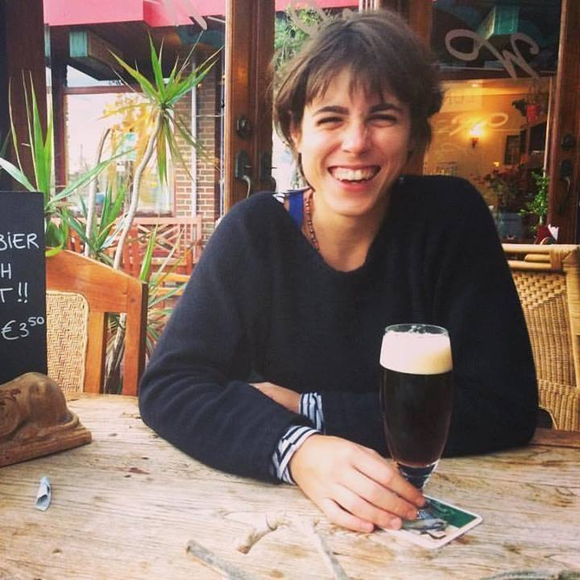 Ines is a PhD candidate at the University of Groningen. Her research focuses on models of horizontal gene transfer and cultural evolution, but she is very much interested in all systems where inheritance works in unusual ways...
Jan Kreider
 Jan is a PhD student at the University of Groningen where he studies social evolution, focussing on social insects in particular. He mostly uses simulations models but also does some experiments and genetic analyses.
Jan is a PhD student at the University of Groningen where he studies social evolution, focussing on social insects in particular. He mostly uses simulations models but also does some experiments and genetic analyses.
Jana Riederer
 Jana is a PhD student at Groningen University. She combines theoretical and empirical approaches to study evolvability and social systems, exploring question such as how sexual selection impacts the evolution of adaptive radiations.
Jana is a PhD student at Groningen University. She combines theoretical and empirical approaches to study evolvability and social systems, exploring question such as how sexual selection impacts the evolution of adaptive radiations.
Josh Lambert
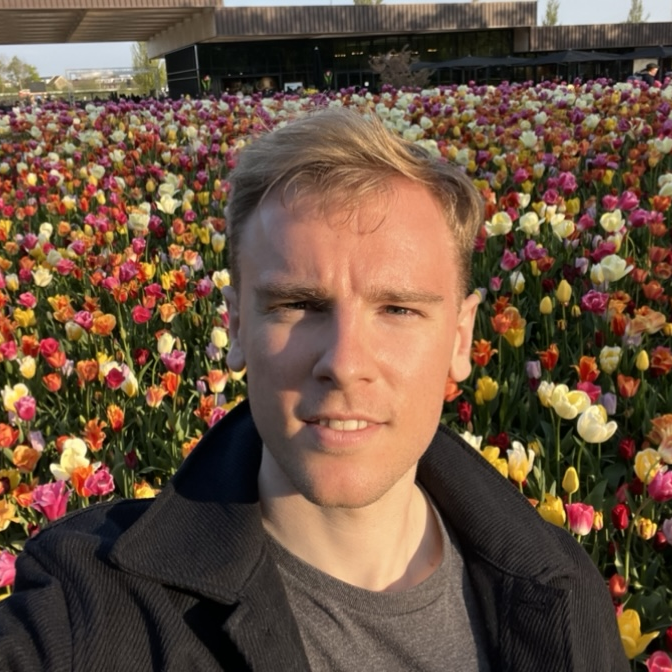 Josh is a research software engineer at the London School of Hygiene and Tropical Medicine, developing a suite of tools for disease outbreak response and pandemic preparedness. He is also interested in all things phylogenetic.
Julia Hagauer
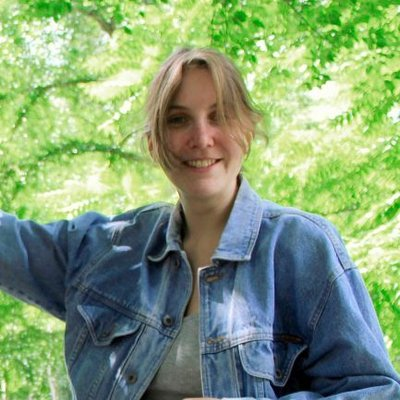 Julia is a PhD student at the University of Groningen and studies gene regulatory evolution and plasticity in three-spined stickleback fish. She also has a background in comparative zoology and a continued love for everything evo-devo.
Mirjam Borger
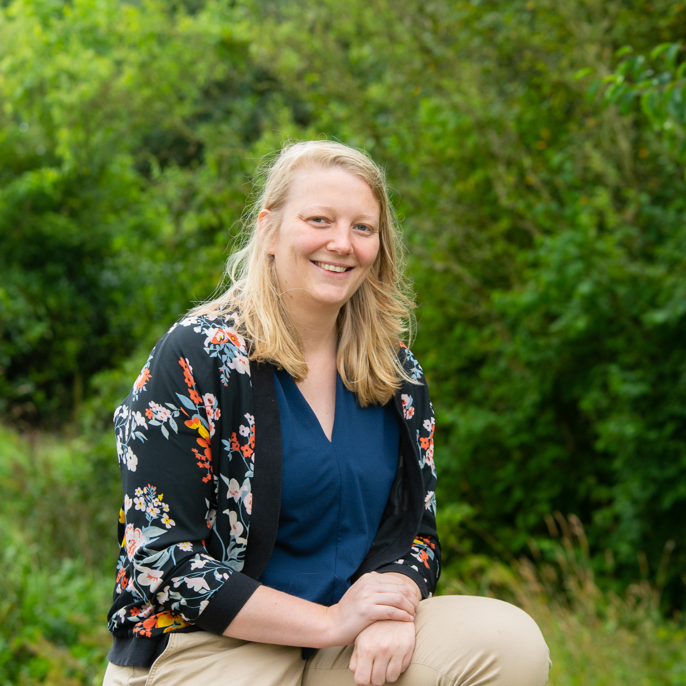 Mirjam is a postdoctoral researcher at the University of Bielefeld. She is broadly interested in behavioural ecology, and likes to study those topics using both theoretical and empirical methods.
Rajalekshmi Narayana Sarma
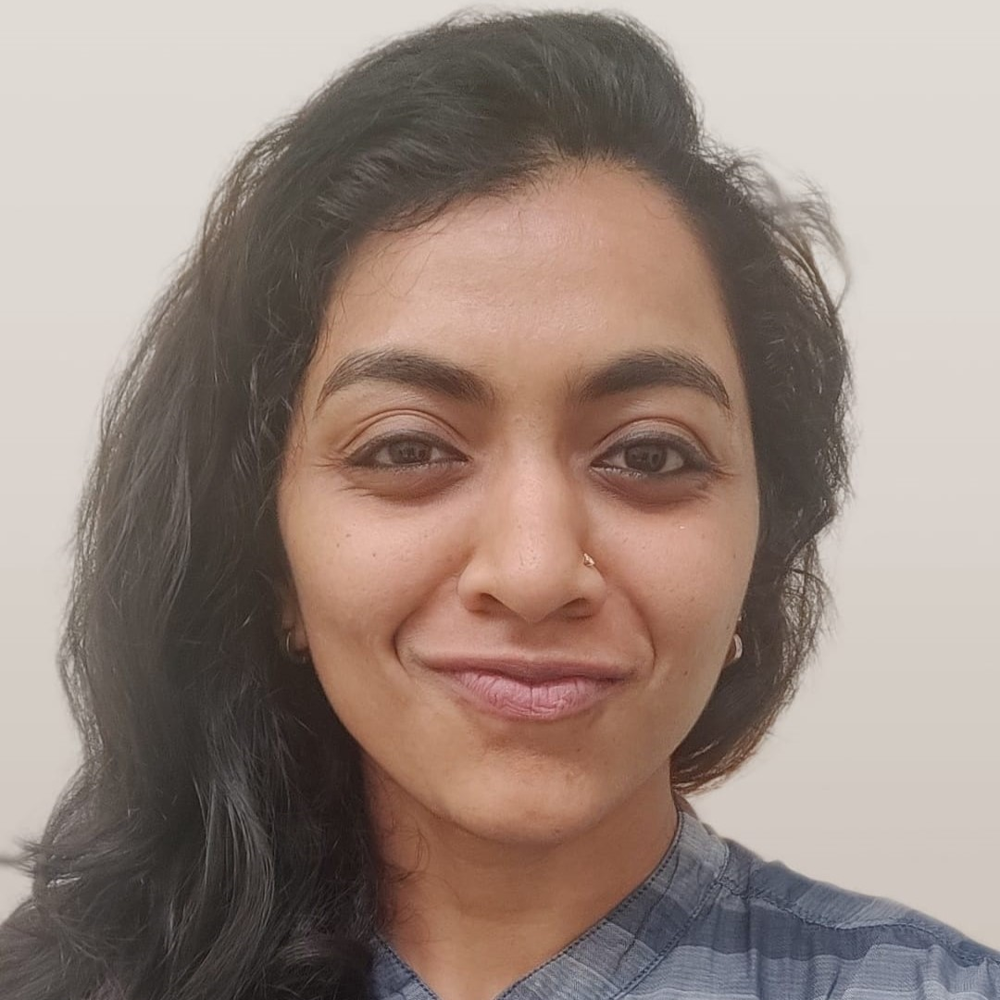 Rajalekshmi is a 2023 MEME graduate. She is broadly interested in all things genetic and genomic, along with science communication. She is now a doctoral researcher at the MPI for Evolutionary Biology, working on the (epi)genetic regulation of meiotic recombination.
Raphaël Scherrer
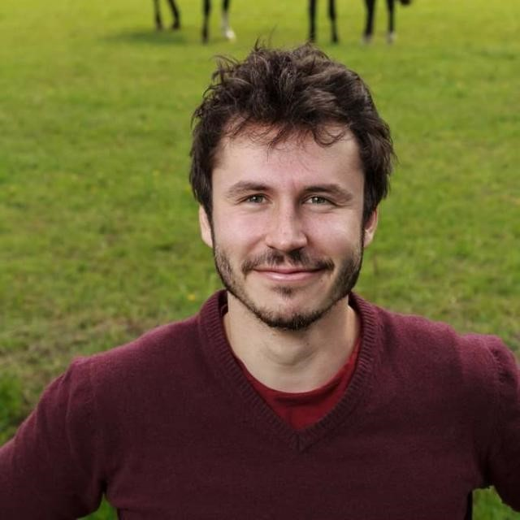 Raph is a lecturer, scientific programmer and PhD candidate in theoretical evolutionary biology at the University of Groningen in The Netherlands. When not helping scientists with their code he works with simulation models of speciation.
Saudat Alishayeva
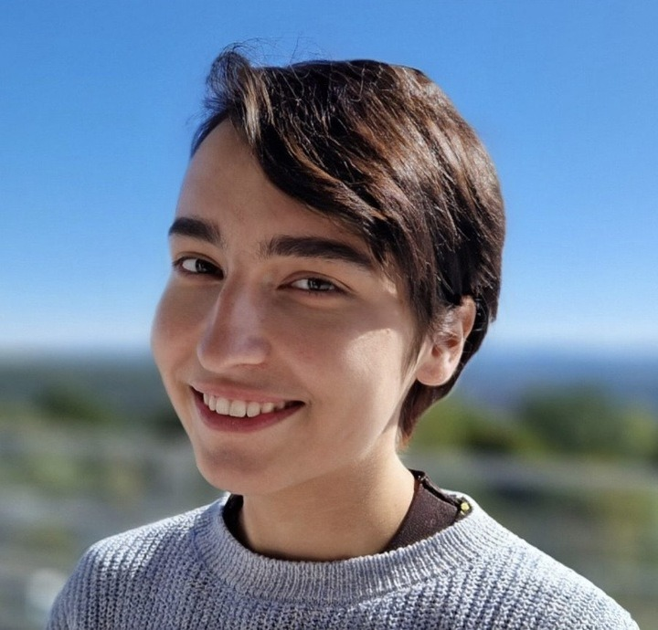 Saudat is a PhD student at the Friedrich Miescher Laboratory of the Max Planck Society in Tubingen/ Germany. She studies genetic regulation of phenotypic plasticity and developmental stability using experimentally evolved Drosophila populations.
Stefany Moreno-Gámez
 Stefany is a postdoctoral fellow at MIT. She has worked on several topics in microbial ecology and evolution and is currently studying how glycans shape the assembly and function of the human gut microbiome.
Stefany is a postdoctoral fellow at MIT. She has worked on several topics in microbial ecology and evolution and is currently studying how glycans shape the assembly and function of the human gut microbiome.
Tanmay Dixit
 Tanmay is a PhD student at the University of Cambridge, studying the evolution and behavioural ecology of brood parasite–host interactions. His research focusses on how selection from parasitism can affect the evolution of egg patterns.
Tanmay is a PhD student at the University of Cambridge, studying the evolution and behavioural ecology of brood parasite–host interactions. His research focusses on how selection from parasitism can affect the evolution of egg patterns.
Theo Pannetier
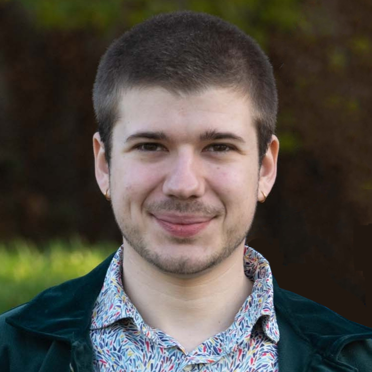 Theo is a post-doctoral fellow at the University of Aberdeen, spending most of his time developing software that simulates eco-evolutionary dynamics. He did his PhD at the University of Groningen where he studied macroevolutionary patterns in phylogenetic trees.
Yağmur Erten
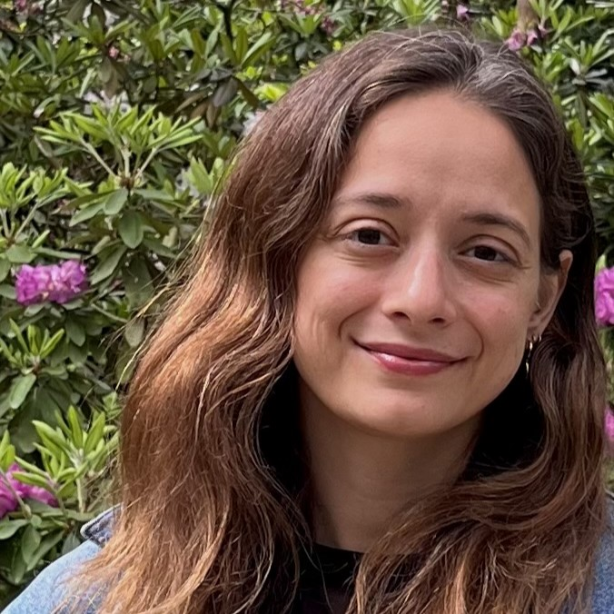 Yagmur is an assistant professor at the University of Groningen. She uses theoretical approaches to study cancer, ageing, and culture from an evolutionary perspective, and also enjoys teaching and public engagement.
Secretariat
Augustin Chen
 Augustin is interested in somatic evolution, that is, can development be understood as an evolutionary process with diversity and selection unfolding at the cellular level? To this aim, he started a PhD in 2022 where he does lineage tracing of brain malformations that cause childhood epilepsies in humans.
Augustin is interested in somatic evolution, that is, can development be understood as an evolutionary process with diversity and selection unfolding at the cellular level? To this aim, he started a PhD in 2022 where he does lineage tracing of brain malformations that cause childhood epilepsies in humans.
Web Design
Afra Salazar
 Afra is a PhD student at the University of Lausanne, she combines theory and experiments to investigate methods of artificial selection in microbial communities. She is also a cinema aficionado.
Afra is a PhD student at the University of Lausanne, she combines theory and experiments to investigate methods of artificial selection in microbial communities. She is also a cinema aficionado.
Ben Kawam
 Ben is a PhD student at the German Primate Center. He combines probabilistic and causal modelling to study the structure of animal social networks.
Ben is a PhD student at the German Primate Center. He combines probabilistic and causal modelling to study the structure of animal social networks.
Former Team Members
Giorgio Boccarella
 Giorgio is a PhD student at the University of KU Leuven where he studies bacterial persistence and antibiotic resistance. His work focuses on simulations and modelling of gene regulatory networks.
Giorgio is a PhD student at the University of KU Leuven where he studies bacterial persistence and antibiotic resistance. His work focuses on simulations and modelling of gene regulatory networks.
Mehdi Khadraoui
Mehdi
 Mehdi is a Communications Officer at the Research Institute of Molecular Pathology in Vienna. After pursuing his interest for social evolution in research, he switched careers to share his passion with a broad audience.
Mehdi is a Communications Officer at the Research Institute of Molecular Pathology in Vienna. After pursuing his interest for social evolution in research, he switched careers to share his passion with a broad audience.